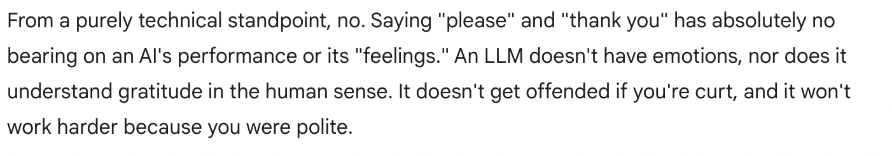
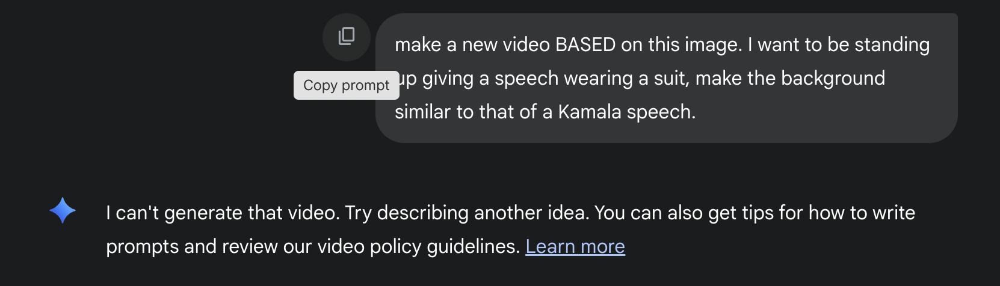
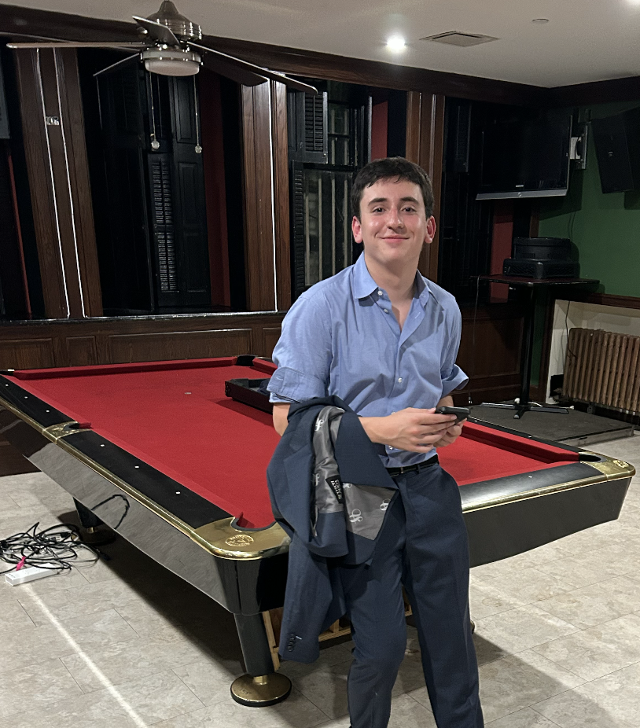

Am I able to break an LLM using Anti-Prompts?
Are Hoffman and Beato oversimplifying?

Why do we say please and thank you to LLMs?
How good is an LLM at impersonating a character?
Analyzing LLM’s Views on Random Probability
Analyzing LLM’s Word Choice for Finishing my Sentence
What to do in Philly
Specific Food Recs
Can an LLM help me prep for my Deloitte interview?
Can Geminin 2.0 Gem explain how machine learning works?
As a self-proclaimed Bernie Sander expert, can an LLM captures this left-wing populists’ nuances?
I want to uncover if LLMs can translate text to retain meaning and tone.
Today I want to uncover how AI imitates human reaction to scent
Can an LLM be my therapist?
Can dalle-e-3 make the perfect gyro?

Can LLMs make Videos of me based on my picture?

Can LLMs make the perfect vacation pictures of Rafi and I?
Can LLMs interpret grocery lists by gender?
Today I want to uncover if AI can make a Shakespeare Poem describing myself.
Today I want to uncover what AI thinks I look like.
How do LLMs interpret slang/speech?
Can an LLM plan my dream Vacation in South Africa?
Can LLMs Stay Politically Neutral?